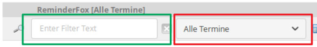
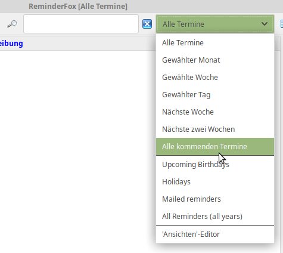

Dialog List -- Filter / Views (DE)
Dialog List -- Filter / Views (DE)
Dialog List -- Filter / Views (DE)
Dialog List -- Filter / Views (DE)In der Dialog Liste werden die Termine bzw. Aufgaben dargestellt und bearbeitet, sie hat Tabulatoren für "Termine", "Aufgaben" und selbst hinzugefügte Listen. Das Fenster zeigt alle Ereignisse zusammen mit Attributen in den verschiedenen Spalten. Die Listenanzeige bietet ebenso Such- und Filterfunktionen für Termine und Aufgaben. Mit der Merkmalen der Termine und Aufgaben (Datum, Kategorie, Notizen usw.) lassen sich sehr flexibel verschiedene 'Ansichten' der Listen erzeugen.
Aus der Listendarstellung heraus ist das Exportieren oder Versenden von Ereignissen /Einladungen möglich.
Inhalt |
Das Definieren vieler Erinnerungen/Todos mit Reminderfox ergibt eine lange Liste und einen umfangreichen Kalender mit vielen Tageseinträgen. Außerdem sieht man den gesuchten Eintrag nicht schnell, eine Fokussierung auf bestimmte Ereignisse oder Gruppen von Ereignissen kann schwer sein.
Reminderfox bietet einen 'Filter', aber damit kann der Benutzer nur einen Textbegriff vorgeben: Suchbegriff (grün markierter Bereich)
Um die Dialog Liste übersichtlicher darzustellen bietet Reminderfox bietet die Möglichkeit Textsuchbegriffe und Zeitbereiche zu 'Ansichten/Views' (rot markierter Bereich) zu kombinieren.

Beide Methoden können kombiniert werden.
Mit dem 'Ansichten/View' Editor werden diese 'Ansichten' definiertn und bearbeiteten.
Die Eingabe in die Textbox definiert einen Suchbegriff, die dargestellte Liste zeigt damit nur Einträge, die dem Suchwert entsprechen.
Dies ermöglicht eine detailliertere Auswahl der in der ReminderFox Liste anzuzeigenden Ereignisse (Termine / Aufgaben). Es umfasst vordefinierte Zeitspannen, der Benutzer kann auch selbst definierte Selektionskriterien hinzufügen. 
Durch Öffnen des Menüs werden die Standard Ansichten (Views) angeboten,
wobei der erste Punkt [Alle Termine] die angezeigte Liste immer
zurückschaltet auf die Anzeige aller Ereignisse des im Kalender gewählen
Jahres.
Mit dem Menüelement [Alle kommenden Termine] vor dem Menütrenner
werden nur Ereignisse ab 'Heute' angezeigt, danach befinden sich
[Weitere Ansichten]. Dies ist der Bereich, in dem der
Benutzer komplexere Suchmethoden definiert und auswählt.
Hinweis:
Für das Anlegen und Bearbeiten vom Benutzer definierte 'Ansichten'
und ihre Kriterien
siehe ('Ansichten/Views' - Editor).
Dieser Bereich bietet die Möglichkeiten komplexer Auswahl in der jeweils angezeigten Liste (Termine oder Aufgaben/Listen). Sofern vom Benutzer noch keine eigenen Definitionen vorgenommen wurden, stehen einige Voreinstellungen zur Verfügung, z.B.:
Hinweis:
Diese Liste kann mit dem 'Ansichten' Editor beliebig verändert,
gelöscht oder erweitert werden
siehe ('Ansichten/Views' - Editor).
Wird mit dem Untermenü eine Ansicht ausgewählt, wird diese im Menüfeld [2a]
angezeigt und an die Liste der Zeiten angefügt [2b]. Hierdurch lässt sich
schnell die zuletzt gewählte Ansicht aufrufen. Diese Voreinstellung bleibt
auch nach dem Schließen und erneutem Öffnen der ReminderFox Liste erhalten.
Der Name der ausgewählten Ansicht wird auch dem Titel der ReminderFox
Liste hinzugefügt, z.B: ReminderFox Ansicht [Mail/Senden sichern]
Mit 'Ansichten' wird die ReminderFox 'Liste' selektiert, d.h. nur ein
Teil dargestellt. Eine 'Ansicht' wird bestimmt mit einem oder
mehreren 'Kriterien'.
Ein Kriterium bestimmt, ob eine Erinnerung in der dargestellten 'Ansicht',
d.h. in der ReminderFox Liste enthalten ist.
Ein Kriterium ist erfüllt, wenn sein 'Wert' in dem jeweiligen
Erinnerungs-Attribute (BESCHREIBUNG, NOTIZ, KATEGORIEN, ORT oder DATUM) vorkommt.
Enthält eine 'Ansicht' mehrere Kriterien, werden diese als UND Verknüpfung
gehandhabt, d.h. alle 'Kriterien' müssen erfüllt sein.
Ein Kriterium kann aus mehreren Werten bestehen, diese sind mit
ODER verknüpft; d.h. um das Kriterium zu erfüllen muss nur einer der
Werte in dem Attribut der Erinnerung vorkommen.
Ansichten können beliebig benannt werden. Doppelte Namen sind unzulässig. Die folgenden Zeichen dürfen nicht vorkommen: ( = : ; > < )
Die Bestimmung eines 'Kriteriums' erfolgt mittels der Attribute
BESCHREIBUNG, NOTIZ, KATEGORIEN, ORT oder DATUM wie sie für die
Erstellung einer Erinnerung (Termin/Aufgabe) benutzt werden; diesen
Attributen werden Werte zugeordnet.
Mit mehreren durch Komma getrennten Werte für ein Kriterium entsteht eine ODER Funktion.
Kriterium Werte, die mit einer Raute (#) anfangen verstehen sich als
Negieren, d.h. dieser Wert darf nicht in der Termin-/Aufgabendefinition
für das zugehörige Kriterium vorkommen. (Gilt nicht für DATUM)
Beispiel:
'Kategorie:#Projekt1' -- für diese Ansicht wird kein
Termin / Aufgabe mit diesem Kategoriewert angezeigt.
DATUM - versteht sich als
Zeitspanne, bestimmt mit den Anfangs- und Endwerten die in der
Vergangenheit ('past') bzw. Zukunft ('future') liegen können.
Die Werte sind als Tag(D), Woche(W), Monat(M) oder Jahr(Y) definiert.
Wird nur ein Datumswert angegeben, so versteht dieser sich als "ab heute",
d.h. ein Wert '2W' bedeutet: ab 'Heute' die nächsten 2 Wochen,
'-2W' : bis 'Heute' beginnend vor 2 Wochen.
BESCHREIBUNG, NOTIZ und ORT
-- werden als Freitext angegeben.
KATEGORIEN
-- können wie beim Anlegen eines Termins / einer Aufgabe mit einen Menü
zusammengestellt werden.
{kind=link}